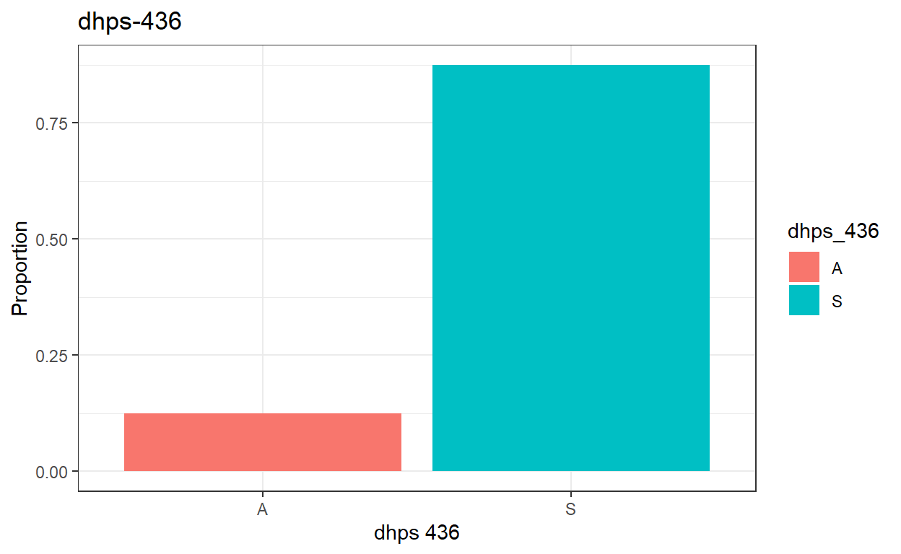
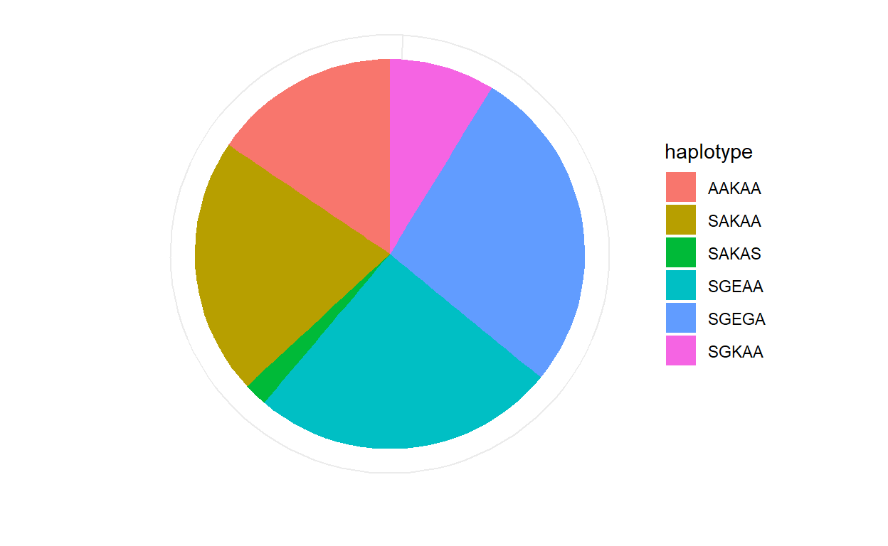

$(document).ready(function() {
// Initialize Tutorial if necessary
Tutorial.addStep(...);
// Additional JavaScript code
});Welcome
In this practical you will learn to:
- calculate the prevalence of resistance markers (SNPs)
- estimate the frequency of resistance markers (SNPs)
- derive haplotypes and frequency of resistant haplotypes based on surveillance data
- summarize these metrics graphically
For this session, we will use a hypothetical dataset collected from site A. Each row represents a sample from an individual patient.
More information on the data is provided in the sections A, B and C.
A) Prevalence of resistance (SNPs)
Resistance to pyrimethamine is conferred by mutations in the dhfr gene. There are 3 main mutations in the dhfr gene that are very common across sub-Saharan Africa. Resistance to sulfadoxine is conferred by multiple dhps mutations, the prevalence of which varies spatially in Africa.
A surveillance survey in site A was conducted to quantify the prevalence of dhps mutations in children diagnosed with malaria. Blood spots were collected and samples were sequenced at the dhps gene in the following loci: 436, 437, 540, 581, 613.

Each row represents a sample from an individual patient. We can view the first few rows of the dataset:
head(data)An individual may be infected by multiple genotypes at the same time, and these can be detected in their blood sample. For instance, “KE” at the 540 codon indicates a mixed infection at the 540 codon position.
We are going to use the tbl_summary function to calculate the proportions of each mutation for each of the 5 loci listed above. Run the code below which shows how to calculate this for the first 4 loci, and edit the code to display the same proportion for dhps 613S.#### calculate the prevalence of each mutation
data %>%
tbl_summary(include = c("dhps_436","dhps_437", "dhps_540", "dhps_581"),
digits = list(all_categorical() ~ c(0, 2))) %>% add_n() %>%
modify_header(label = "Resistance Marker") The prevalence of dhps 436A is 12.5%. What is the prevalence of each of the following mutations?
We can also visualize mutation prevalence graphically:
ggplot(data, aes(x= factor(dhps_436) , fill=dhps_436)) + theme_bw()+
geom_bar(aes(y=( after_stat(count))/sum(after_stat(count))))+
ylab("Proportion") + xlab("dhps 436") + ggtitle("dhps-436")
B) Frequency of resistance (SNPs)
Frequency of resistance is a theoretical quantity and is defined as the proportion of parasites with the resistance genotype among the parasite population. The difference between the prevalence of resistance in the infected human population (% of individuals carrying at least one resistant parasite clone) and the frequency of resistance in the parasite population (% of parasite clones which are resistant) is shown by the figure below (for more information see Okell et al. Sci rep 7, 7389 (2017).

As a proxy for the frequency of resistance, we can use the proportion
of a particular genotype among samples which are unmixed at the loci of
interest.
For instance, the frequency of dhps 540E is lower than the prevalence
and can be estimated as 57.4% (66/(66+49)) (see code below).
### 540E
table(data$dhps_540)##
## E K KE
## 66 49 13print(66/(66+49))## [1] 0.573913What is the frequency of dhps 581G? Edit the code below to generate the result:
### 581G
table(data$dhps_581)C) Frequency of resistance haplotypes
Next, we can generate a variable (“mixed”) to store whether the sample contains any mixed infections at any of the 5 dhps loci:
data$mixed<-0
data$mixed[which(data$dhps_540=="KE"|data$dhps_581=="AG")]<-1We can then construct the dhps haplotype for samples which are not mixed and store in a separate column as a string variable (“haplotype”) using the following code:
data<-data %>% mutate(haplotype = case_when(mixed==0 ~ paste0(dhps_436,dhps_437,dhps_540,dhps_581,dhps_613)))Edit the code below to answer the questions below:
data$mixed<-0
data$mixed[which(data$dhps_540=="KE"|data$dhps_581=="AG")]<-1
### add a line of code to find out how many mixed infections there are.
data<-data %>% mutate(haplotype = case_when(mixed==0 ~ paste0(dhps_436,dhps_437,dhps_540,dhps_581,dhps_613)))
##edit line below to obtain haplotype frequencies:
table(data$haplotype)As a proxy for the frequency of a dhps genotype, we can use the proportion of a particular genotype among samples which are unmixed at the loci of interest. Using this approach, calculate the frequency of each haplotype by excluding mixed infections.Find the frequency of the following haplotypes:
You can visualize the frequency of haplotypes graphically using a pie chart:
ggplot(subset(data, !is.na(haplotype)),
aes(x="", y="", fill=haplotype)) +
geom_bar(stat="identity", width=1) +
coord_polar("y", start=0)+ theme_minimal() +ylab("") +xlab("")